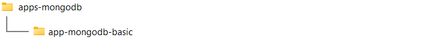
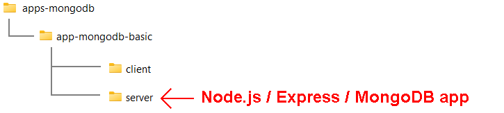
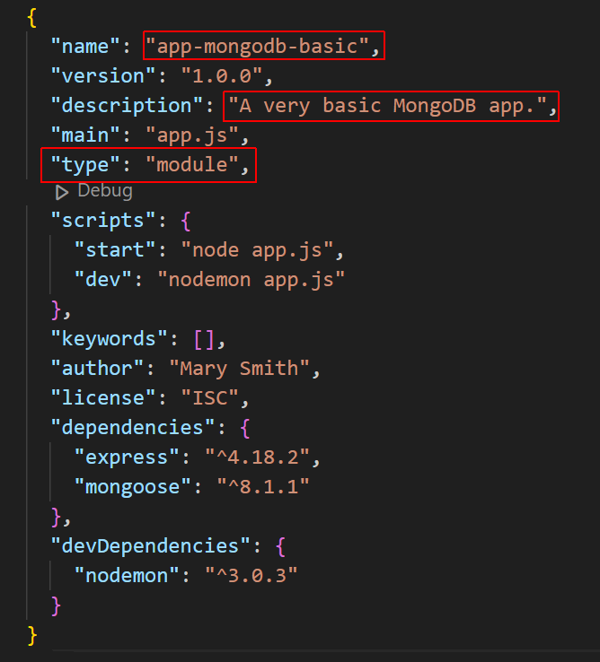
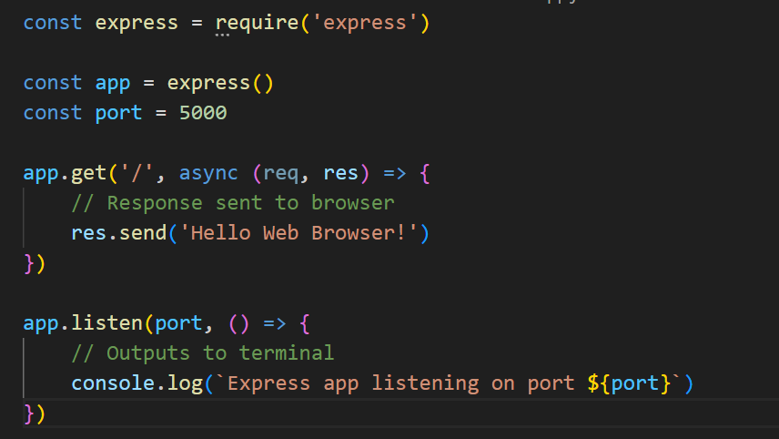
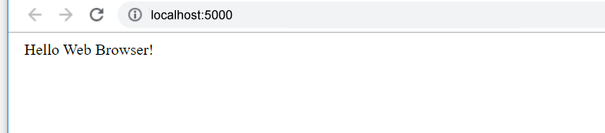

Learning Goals
At the end of this Tutorial, you will be able to:
- Create a basic app with Node.js and the Express module that can listen to browser requests and send a response to the browser.
About Express to MongoDB connections
You have two main options for connecting an Express app to a MongoDB database:
- MongoDB client module: This option allows for maximum flexiblity in writing your Express code because it does not require that you first create a schema before creating querIes.
- Mongoose module: With thIs option, you must create anduse a schema when creating queries.
The Mongoose option is preferred
Creating a folder structure
Begin by creating a folder structure for your Express-powered and MongoDB-connected app. See below.
In the /app-mongodb-basic subfolder, copy and paste the /client and /server subfolders from your /app-express-basic project folder.
You may have named the two folders as /frontend and /backend. And the /server or /backend folder as /api or /apis.
Installing Mongoose
Before continiung, close any Node.js apps that may be running on your machine. Also close any open terminals.
- Open a Command prompt or VS Code Terminal, and navigate to the folder that holds your app. For example:
cd apps-mongodb/app-mongodb-basic/server - Install the Mongoose module locally as follows:
npm i mongoose - Open your package.json file and update it for your MongoDB app. 
Because you have defined your app type as a module, you can use the import rather than require() syntax in your app.js file.
Creating a config.js file
You will next create a file to hold some constant values for your app.
- Create a new text file, paste in the following code, and save the file as config.js in your app folder:
export const PORT = 5000; export const mongoDBUri = "<your-connection-string>; - You may use any valid port number. Add your own connection string.
You obtained your MongoDB connection string in the previous Tutorial. Note that the string does not specify a particular database.
Updating your app.js file
Your final task is to update your Express app to connect it to MongoDB.
- Open the basic Express app.js file you copied and pasted. It should look like that shown below. 
- Update the app code as follows and save the file:
import express from 'express' import { PORT, mongoDBUri } from './config.js'; import mongoose from 'mongoose'; const app = express() app.get('/', async (req, res) => { // Response sent to browser res.send('Hello Web Browser!') }) async function connectToMongoDB() { try { await mongoose.connect((mongoDBUri), { useNewUrlParser: true, useUnifiedTopology: true }); console.log('Express app connected to MongoDB'); app.listen(PORT, () => { console.log(`Express app listening on port ${PORT}`) }) } catch (error) { console.error('Could not connect to MongoDB', err); } } connectToMongoDB(); - Finally, in your terminal, start your new Express/MongoDB app:
npm run dev
Your terminal window should look as follows:

And you should see the following in your web browser for your chosen port number.
Reviewing the Express/MongoDB app code
Let's examine line-by-line the code for this basic Express/MongoDB app.
In summary, you will be using various methods of the app object, where app your named instance of an Express application.
app.method(arguments)
The app object has various properties and methods for managing the server, routes, middleware, and more.
Begin by importing the express function, which is a top-level function exported by the Express module. Assign this exported function to the variable named express.
const express = require('express')Next, call the express function, which creates and returns an Express application object. This object is stored in the variable app.
const app = express()To be able to use various methods of the app object, such as .listen(), .get(), and .post, you need to specify a port number. For example:
const port = 5000The .get() method of app takes two arguments: the route and the callback function.
app.get(<route>, <callback function(args)>)In this example, the route is the home page '/'.
app.get('/', async function(args) {
// Send a response to browser
})You could rewrite the asynchronous callback function as an arrow function.
app.get('/', async (args) => {
// Send a response to browser
})The callback function has access to the request (req) and response (res) objects, and can accept them as arguments.
app.get('/', (req, res) => {
// Send a response to browser
})Express offers a .send() method to send a response to the browser. This method is not available in 'raw' Node.js.
app.get('/', (req, res) => {
res.send('Hello Web Browser!')
})Express infers the content type and sets the content type header. Express also infers the status code.
Use the .listen() method to listen to browser requests on the chosen port.
app.listen(port);Express assumes the server name is 'localhost' and protocol is 'http'. So there is no need to enter these details.
Optionally, you can pass a callback function to the .listen() method. For example:
app.listen(port, () => {
console.log(`Example app listening on port ${port}!`)
})Now your app code is ready to handle requests with a specific method (such as GET) to a specific route (such as the home page).